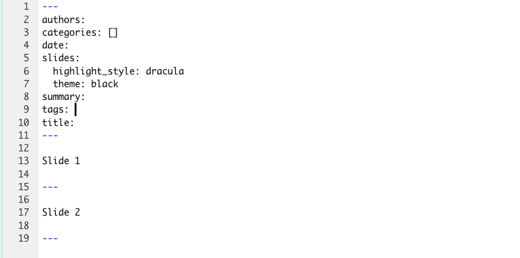
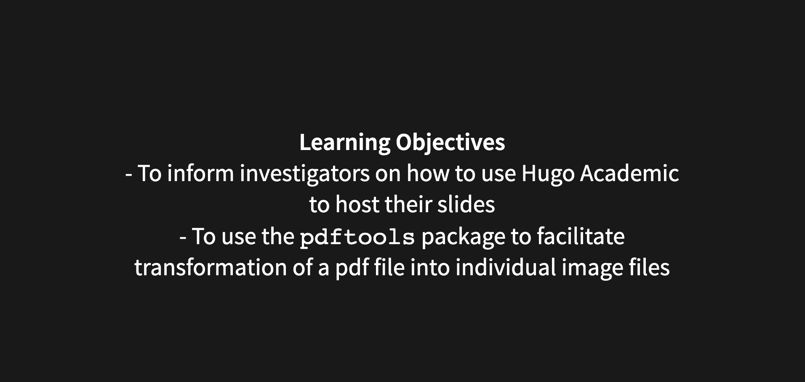
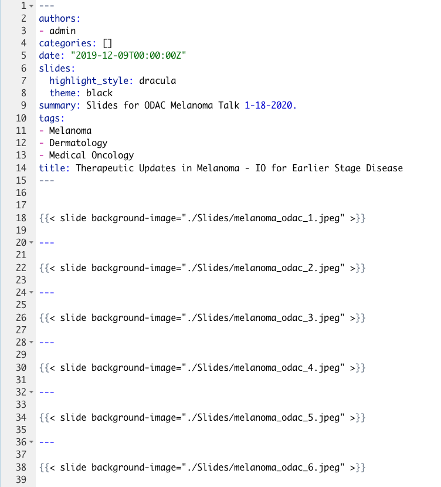

Initial Steps
- We are going to assume that you’ve already built your website using
blogdownandHugo Academic
- If you have not, please see our post Communicating CT Research via Website Development with R
First create a folder for your slides for the particular talk you want to post
- Within your main webstie working directory
- Click through
content->slides - In the
slidesfolder create a new folder that is specific for the slides your intended folder - In that folder you will then create an
index.mdmarkdown file which will control the content of your slides
- I would also recommend creating another folder in that folder where you can store images of slides from your powerpoint presentation or pdf presentation
- I make one and call it
slidesbut you can call it whatever you want
- I make one and call it
- Click through
Creating content in the index.md markdown
- The YAML in that index can look like this:
authors:
- admin
categories: []
date: “2019-12-09T00:00:00Z”
slides:
highlight_style: dracula
theme: black
summary: Slides for ODAC Melanoma Talk 1-18-2020.
tags:
- Melanoma
- Dermatology
- Medical Oncology
title: Therapeutic Updates in Melanoma - IO for Earlier Stage Disease
Underneath the YAML, you will build the content of your slides
- Each set of slides will be seprated by two three dash segments such as:

You can create any content you want in these slides such as:

That will create slides that look like this:

Using your actual slides from powerpoint or pdf as slides on your website
- Instead of creating your slides for your website manually using
Hugo Academicorblogdownyou can make images of yourpowerpointfiles and use them as a backdrop (which is my preference)
- This can produce really nice looking slides, but it can be a bit labor intensive
- One approach is to
printyour slides inpowerpointtopdfformat and then convert each slide to a single pdf or jpg file and put those files in youslidesfolder that you created
- But doing this slide by slide is quite tedious
- Enter a slick
Data Science Solution- Make use of a wonderful package called
pdftools- this allows you to convert one to all of your pdf slides to a variety of image types
- Make use of a wonderful package called
- Enter a slick
pdftoolswill greatly reduce your work load
Let’s use an example from one of our presentations
- In January, we had a
powerpointpresentation on IO therapy in earlier stage melanoma
- After creating the
powerpointpresentation we printed theppttopdf- That pdf was titled
melanoma_odac.pdf- To faciliate the creation of the slide presentation using
blogdownwe made use of thepdftoolspackage as follows:
- To faciliate the creation of the slide presentation using
- That pdf was titled
Load the pdftools package
library(pdftools)Convert PDF to JPEG
- Use the following code for this:
pdf_convert("melanoma_odac.pdf", format = "jpeg", pages = NULL, filenames = NULL, dpi = 300, opw = "", upw = "", verbose = TRUE)
- Of note,
melanoma_odac.pdfis the name of the pdf that you want to convert slide by slide to jpeg, this file should be in the same working directory as the Rproject that you are working with- Once you execute this function, each slide will be converted into the image format of your choosing -> in this case we chose jpeg
- This is important, b/c it should match the code in your
index.mdmarkdown for your slides presentation
- Each slide will be automatically labeled as
melanoma_odac_1.jpegfollowed bymelanoma_odac_2.jpeg, etc.
- This is important, b/c it should match the code in your
- Once you execute this function, each slide will be converted into the image format of your choosing -> in this case we chose jpeg
Important nuances of the code
- pages = NULL will convert all of the slides to individual slide
- dpi = 300 is the resolution of the images that you are saving
Format your index.md appropriately
- Then, if you want your jpeg slides to take up the whole entire slide, make them a backdrop
Here is an example of what Dr. Miller’s
index.mdfile looked like To see how this turns out click here